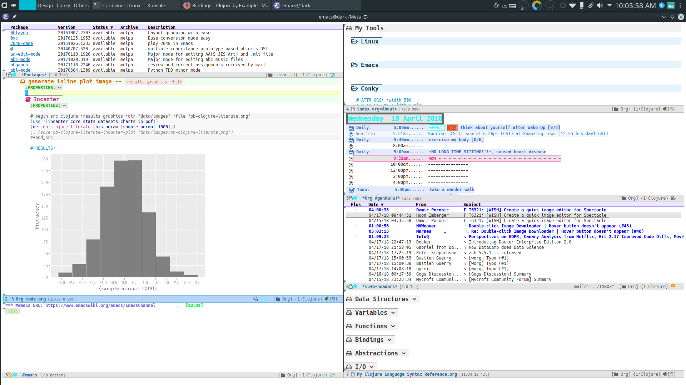
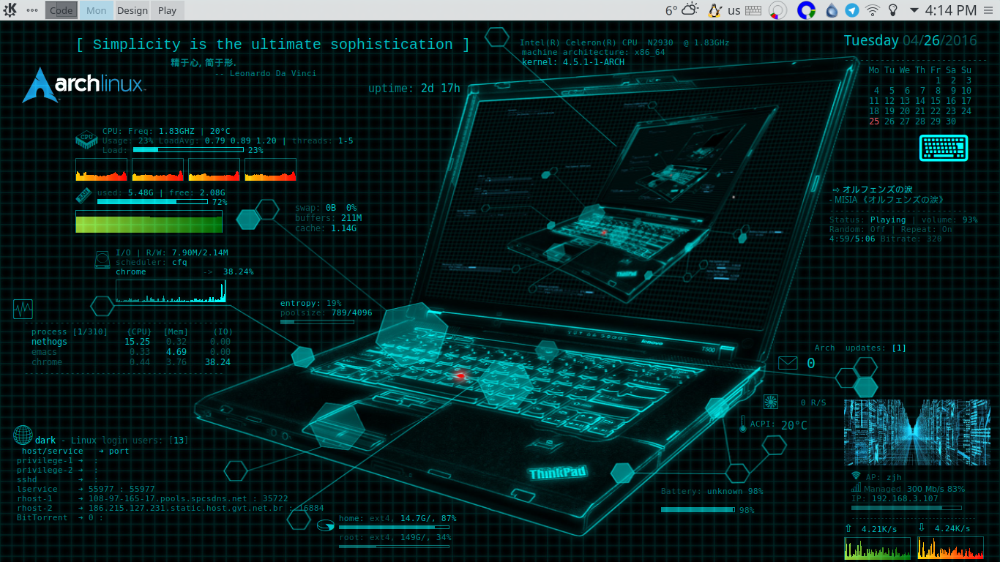

About
This is what I look like.
I'm an amateurish coder like Lisp, Clojure, I use Emacs (Org Mode) a lot in my daily life! My working system is Arch Linux. I contribute some code to open sourced projects, Emacs packages, Org Mode etc sometimes. Mainly actived in Clojure forums, Emacs/Org-Mode mailing lists, IRC channels (#emacs,#archlinux,#lisp,#clojure) sometimes.
I like literature, movie, philosophy, argue, and daydreams. I like get to know about any interested things. I write some small and never published novels with suddenly popuped fantasy idea.
我是一个业余写代码的，喜欢Lisp，Clojure。我在生活中主要用Emacs (Org Mode)。我的 笔记本上安装的是Arch GNU/Linux。这是我从2012年开始用到现在的。平常会对一些开源项 目Emacs的插件或者Org Mode贡献代码。
我喜欢文学，电影，哲学，辩论，还喜欢做白日梦，以及各种有趣的东西。也会把脑海中突 然冒出来的一些奇怪的念头和想法写成短小的小说残篇，我还从来没有发表过他们。
Contact
CUSTOM_ID: Contact
- Email: numbchild A/T gmail |. COM
- IRC: stardiviner on Freenode
- Keybase: https://keybase.io/stardiviner
Resume
CUSTOM_ID: Resume
Profiles
Linux
I've been use Linux for a long time from . It is a hard start, but awesome path for being more good on Linux machine.
从大学辍学以来 一直用的Linux。
Emacs + Org-mode
Now, I use Emcs + Org-mode a lot, I try to do many things under Emacs, and with Org-mode.
- Writing code with Emacs and Org-mode Literate Programming paradigm.
- Note taking with Org-mode.
- Record down knowledge with Org-mode like Wiki.
- Task management with Org-mode Agenda.
- Email with Emacs package mu4e.
- IRC chatting with Emacs package ERC.
- Website/Blog publishment with Org-mode exporting.
一开始是学的Vim， 后来因为觉得 Org-mode 超赞，就转到 Emacs下了。确实很赞。之后一直都是用Org-mode组织内容。GTD, Wiki (Personal Knowledge Graph), Blog, Email etc。 用Elisp 给很多Emacs插件和Org-mode贡献过一些代码。
contributed commits on Org-mode
git log --author=stardiviner
commit 596da7b0384d64f3c1c22a49bc9bced8d0d8abf8
Author: stardiviner <numbchild@gmail.com>
Date: Sun Apr 22 09:37:40 2018 +0800
ob-eshell.el: Add Eshell support for Babel.
* lisp/ob-eshell.el (org-babel-execute:eshell): Execute Eshell code in Babel.
(org-babel-prep-session:eshell):
(ob-eshell-session-live-p):
(org-babel-eshell-initiate-session):
(org-babel-variable-assignments:eshell):
(org-babel-load-session:eshell):
* testing/test-ob-eshell.el: Write test for ob-eshell.
* doc/org-manual.org (Languages): Add document for ob-eshell.
commit 280e3c9b530b94a4c3c8392a975fc1d5b8797335
Author: stardiviner <numbchild@gmail.com>
Date: Sun Apr 15 21:29:04 2018 +0800
ob-clojure-literate: Remove dependency on Dash
* contrib/lisp/ob-clojure-literate.el (ob-clojure-literate-get-session-list):
(ob-clojure-literate-set-session):
(ob-clojure-literate-auto-jackin):
(ob-clojure-literate-set-local-cider-connections): Remove dependency
on Dash library.
commit 2a315ab59d3365bb3e1150d763f4094d95041411
Author: stardiviner <numbchild@gmail.com>
Date: Mon Apr 2 13:47:28 2018 +0800
ob-clojure-literate: Handle no :file specified file is nil case
* ob-clojure-literate.el (ob-clojure-literate-inject-code): Handle
no :file specified file is nil case.
commit 46d841d064cd7de4d918abe5d61cec980a061f24
Author: stardiviner <numbchild@gmail.com>
Date: Mon Apr 2 11:58:28 2018 +0800
* ob-clojure-literate: Get session from global connections list
* contrib/lisp/ob-clojure-literate.el (ob-clojure-literate-get-session-list):
(org-babel-map): Get session from global connections list.
(ob-clojure-literate-specify-session): Renamed from
`ob-clojure-literate-specify-session-header-argument'.
commit d7e12d1df7091563c5f0fe0bd8b2db634d3e87ba
Author: stardiviner <numbchild@gmail.com>
Date: Mon Mar 26 11:35:21 2018 +0800
* ob-clojure: Support :ns header argument
* lisp/ob-clojure.el (org-babel-clojure-default-ns): New variable.
(org-babel-clojure-cider-current-ns): New function.
(org-babel-expand-body:clojure):
(org-babel-execute:clojure): Support :ns header argument.
Remove optional parameter (cider-current-ns) to better handle
namespaces.
commit 8835ee750ed6581fc04f4e9b16b7291d6846ad7f
Author: stardiviner <numbchild@gmail.com>
Date: Mon Mar 26 09:47:54 2018 +0800
* ob-clojure-literate: Support vars initialization when prepare session
* contrib/lisp/ob-clojure-literate.el (org-babel-clojure-var-to-clojure):
(org-babel-variable-assignments:clojure): Support vars initialization
when prepare session.
commit 0104bea3ad2ac3285d18eb29dac85d08425c4cc7
Author: stardiviner <numbchild@gmail.com>
Date: Thu Mar 22 01:43:18 2018 +0800
* ob-clojure-literate: Support use :ns header argument
* contrib/lisp/ob-clojure-literate.el (ob-clojure-literate-set-ns):
Renamed from `ob-clojure-literate-cider-do-not-find-ns'
(ob-clojure-literate-enable):
(ob-clojure-literate-disable): Support use :ns header argument.
commit 5a1a1f3d9a03ae55775666899f72ea9cb0edf0cf
Author: stardiviner <numbchild@gmail.com>
Date: Thu Mar 22 01:21:22 2018 +0800
* ob-clojure-literate: CIDER jack-in outside of project by default
* contrib/lisp/ob-clojure-literate.el (ob-clojure-literate-project-location):
(ob-clojure-literate-default-session):
(ob-clojure-literate-auto-jackin): CIDER jack-in outside of project by
default.
commit b088389c6b4eead4d41528b18a273b8a2cd47eb3
Author: stardiviner <numbchild@gmail.com>
Date: Thu Apr 12 15:13:02 2018 +0200
ob-core: Add document and test for "graphics" format
* doc/org-manual.org: Document value.
* lisp/ob-core.el (org-babel-common-header-args-w-values): Handle
symbol "graphics".
* testing/lisp/test-ob.el (test-ob/result-graphics-link-type-header-argument):
New test.
commit 296b0de4e881b6bd8657dadf7e73fd323f961d8c
Author: stardiviner <numbchild@gmail.com>
Date: Sun Apr 8 20:56:28 2018 +0800
ob-core: Add "link" results format
* lisp/ob-core.el (org-babel-execute-src-block): Handle "link" :results
format.
* doc/org-manual.org: Add document for new result format "link".
* testing/lisp/test-ob.el (test-ob/result-file-link-type-header-argument):
New test.
commit 174e9d1ec94caaa1a13f9f0d37d6483456677ec7
Author: stardiviner <numbchild@gmail.com>
Date: Sun Apr 1 17:42:07 2018 +0800
Fix org-babel-js-initiate-session
* ob-js.el (org-babel-js-initiate-session): Add required optional
second argument.
commit f57df8fc74df1b76aca35bcf0315636b4d3071f3
Author: stardiviner <numbchild@gmail.com>
Date: Sun Apr 1 14:27:01 2018 +0800
ob-shell: Add zsh and fish shells.
* ob-shell.el (org-babel-shell-names) add "zsh" and "fish".
commit 6bb4134cdd4027ae94ac710fc3b1ed433858a4d1
Author: stardiviner <numbchild@gmail.com>
Date: Sun Mar 25 11:26:37 2018 +0800
ob-js: Small refactoring.
* lisp/ob-js.el (org-babel-prep-session:js): Replace `mapc' + `lambda'
with `dolist'.
commit 5ee6c459531b7d010b9825eab38822dec00e02d2
Author: stardiviner <numbchild@gmail.com>
Date: Sun Mar 18 01:33:12 2018 +0800
ob-js: support :session for js-comint REPL.
* lisp/ob-js.el (org-babel-js-cmd): Add js-comint.
(org-babel-js-initiate-session): Add support for js-comint.
commit b4e2fed77e1b656141bf4283b4b674e7e7fe895a
Author: stardiviner <numbchild@gmail.com>
Date: Sun Mar 18 01:19:29 2018 +0800
ob-js: support :session for Indium Node REPL.
* lisp/ob-js.el (org-babel-js-cmd): Add "indium".
(org-babel-execute:js): Handle Indium REPL.
commit 1a1e2286baf41a898c1cf5235d3b6f3a8a81655b
Author: stardiviner <numbchild@gmail.com>
Date: Thu Mar 8 17:15:58 2018 +0800
ob-js: support :session for skewer-mode REPL.
* lisp/ob-js.el (org-babel-js-cmd): Add "skewer-mode".
(org-babel-execute:js):
(org-babel-js-initiate-session): Handle skewer mode.
commit 00938bc98bb3ce7d14bdc400ad9f4e0ac9d04d8b
Author: stardiviner <numbchild@gmail.com>
Date: Tue Mar 13 01:23:52 2018 +0800
org-src: New option for `org-src-window-setup'.
org-src.el: (org-src-window-setup) support open edit src window below.
TINYCHANGE
commit 6cf5fc0fc162534832e5f36ee2c532147e3be6de
Author: stardiviner <numbchild@gmail.com>
Date: Wed Mar 14 16:13:05 2018 +0800
ob-clojure-litterate: Fix trigger functions.
* ob-clojure-literate.el (ob-clojure-literate-enable,
ob-clojure-literate-disable): Put advice into
ob-clojure-literate-mode trigger functions.
commit 49a8de4ffd2d0fc50c975ff3edac15d2bb37a809
Author: stardiviner <numbchild@gmail.com>
Date: Tue Mar 6 14:41:20 2018 +0800
* ob-core.el (org-babel-result-to-file): relative file link result.
Respect option `org-link-file-path-type`.
commit 39bd69b08d22dc734c9cb8b8f03445ee6eb76baa
Author: stardiviner <numbchild@gmail.com>
Date: Fri Mar 2 14:01:01 2018 +0800
* ob-core.el: (org-babel-execute-src-block) handle :results graphics :file case.
Don't write result to file if result is graphics.
commit 6f976f1947099f15bf82940465bb28a5ee582705
Author: stardiviner <numbchild@gmail.com>
Date: Fri Mar 2 12:18:20 2018 +0800
* ob-clojure-literate.el support graphics inline image link result.
(ob-clojure-literate-inject-code): save Clojure image variable to :file.
(ob-clojure-literate-support-graphics-result): fix src block does handle
graphics file result issue.
Use it like this:
,#+begin_src clojure :cache no :dir "data/images" :results graphics :file "ob-clojure-literate.png"
(use '(incanter core stats datasets charts io pdf))
(def ob-clojure-literate (histogram (sample-normal 1000)))
,#+end_src
commit 2e6922191e82546ec47b07a1272597e196e16e93
Author: stardiviner <numbchild@gmail.com>
Date: Wed Feb 14 18:22:45 2018 +0800
* ob-lua.el: remove it.
original ob-lua exists already.
commit 90dfba15a6d53ca7503b07fb988ff3e0cb08971c
Author: stardiviner <numbchild@gmail.com>
Date: Sat Feb 10 08:31:06 2018 +0800
* ob-clojure-literate.el (Clojure Literate Programming in Org-mode): Add.
Stable version.
commit 1c60511672115d94ec17527233b5030ccb0b79de
Author: stardiviner <numbchild@gmail.com>
Date: Sat Feb 10 08:28:40 2018 +0800
* ob-spice.el (supporting spice in Org-mode Babel): Add.
Copied version.
commit 8b50e6cf5add8857abdb1c1c5175a73fcea70d33
Author: stardiviner <numbchild@gmail.com>
Date: Sat Feb 10 08:25:53 2018 +0800
* ob-smiles.el (supporting SMILES in Org-mode Babel): Add.
Copied version.
commit f643a75bd13c9c8d04452512b0452489a999c112
Author: stardiviner <numbchild@gmail.com>
Date: Sat Feb 10 08:17:36 2018 +0800
* ob-redis.el (supporting Redis in Org-mode Babel): Add.
First version.
commit 8a58a9fd46485b7f27f006af306b792baa887776
Author: stardiviner <numbchild@gmail.com>
Date: Sat Feb 10 08:16:29 2018 +0800
* ob-php.el (supporting PHP in Org-mode Babel): Add.
First version.
commit 43c035481126ff68ab1df57a16f0bc67d72cd8f3
Author: stardiviner <numbchild@gmail.com>
Date: Sat Feb 10 08:13:53 2018 +0800
* ob-lua.el (supporting Lua in Org-mode Babel): Add.
First version.
commit 2f2d7552b942ff495ade6c2998d1b9131d1b0a48
Author: stardiviner <numbchild@gmail.com>
Date: Wed Feb 7 17:36:31 2018 +0800
* ob-arduino.el (supporting Arduino in Org-mode Babel): Add.
First version.
commit 4030b7b907135190403d0dcd8c033a78c15aa872
Author: stardiviner <numbchild@gmail.com>
Date: Thu Jun 8 18:24:53 2017 +0800
ob-sclang.el: add ob-sclang for sclang Org-mode babel support
* ob-sclang.el (org-babel-execute:sclang): support evaluating sclang
code in Org-mode Babel.
Support sclang evaluation in Org-mode Babel.
commit d79835a821f24fdc32a0f46630f1b31c58fbbb4a
Author: stardiviner <numbchild@gmail.com>
Date: Sat Apr 2 00:46:36 2016 +0800
ob-lisp: Add SLY support
* ob-lisp.el (org-babel-lisp-eval-fn): New variable.
(org-babel-execute:lisp): Support using SLY to evaluate lisp src block.
Let user can evaluate Lisp src block with SLY.
Modified from a patch proposal by stardiviner.
TINYCHANGE
Programming Languages
C
Already forgot C programming language after a little touch in college.
大学学过一点C语言，现在已忘记了。
Lisp family: Clojure
I mainly learning and use Clojure currently. Also like Lisp (Common Lisp) (not good at it yet).
现在主要用这个语言 。也会去了解一点 Lisp (Common Lisp)。
Know a little about Python, Ruby, HTML, CSS, JavaScript
I learned a little of Python, Ruby, HTML, CSS, JavaScript when some small things used them.
这些语言都了解一点。
Data Structures & Algorithms
Those days, I try to learn some Data Structures and Algorithms to be a better programmer.
这几天开始学习数据结构和算法。
My Tools
GNU/Linux
Arch Linux
Currently I mainly use Arch Linux.
Ubuntu Linux
I used to use Ubuntu about two yearts ago.
Emacs
I really like Emacs. It has some kind of spirit can help you do things in Emacs style.

Conky
Having an awesome desktop is a cool thing.

Payment


Bitcoin Wallet (BTC)
My BitCoin Wallet Address:
3QrdhGw9N1Jm1QLct74A46NPLHmjpw3yJk
BitCoin Cash Wallet (BTH)
qr7gc5z0zml5g2tj2d88yzxqx7t2wd0gtucugd2fdl
Ethereum Wallet (ETH)
0x04cdae4Db1dbbe29C7F98B6bA14C727Be98f658A
Nagato Pain